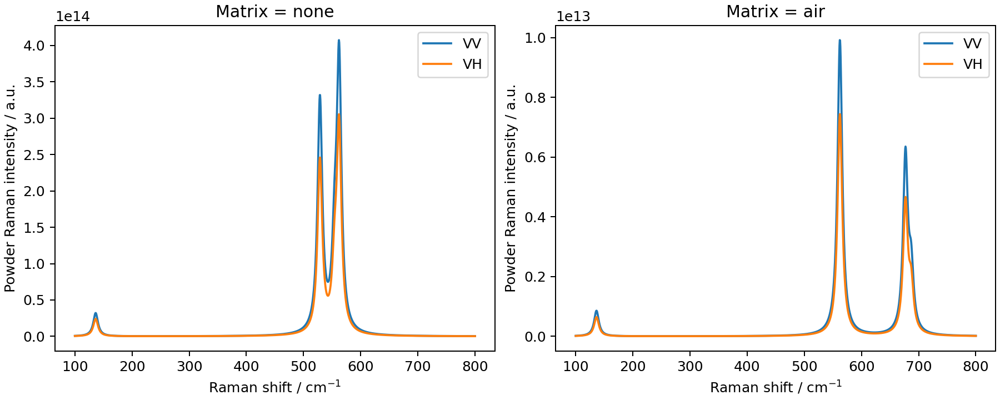
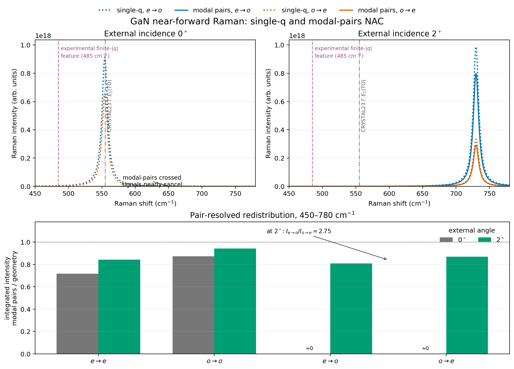
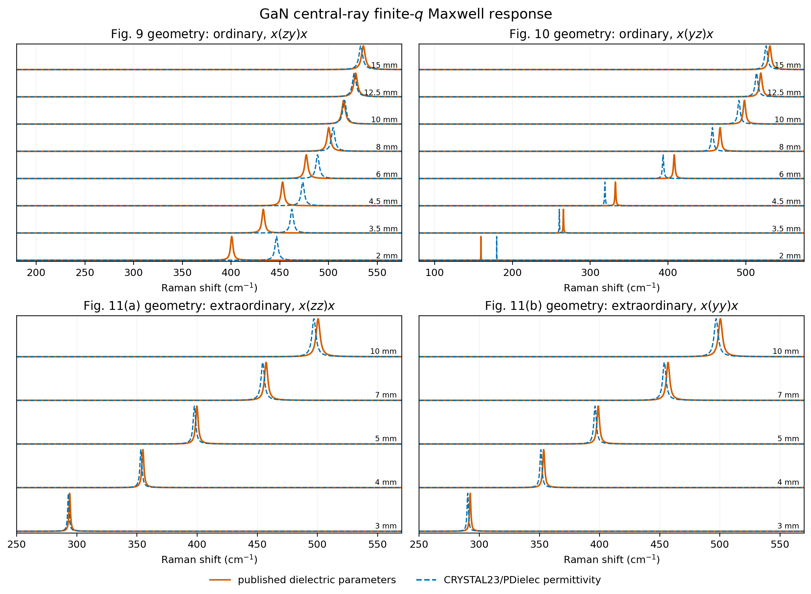
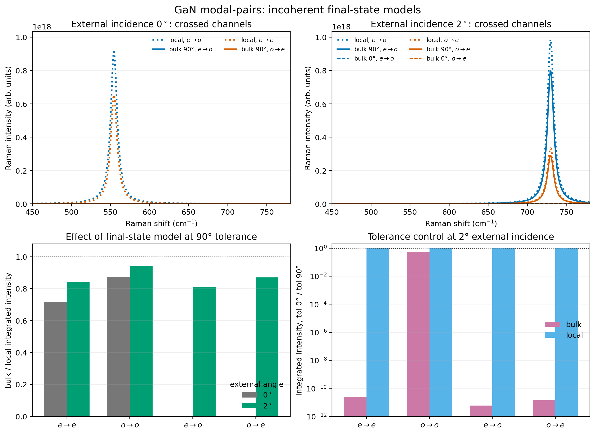

GaN: from powder Raman spectra to crystal modal pairs¶
This application note uses one CRYSTAL23 calculation of wurtzite GaN to
explore three questions: how particle boundary conditions change a powder
Raman spectrum, why the internal optical modes matter in a birefringent
crystal, and what is assumed when Raman emission is incoherent through the
sample depth. The working files are in Examples/ApplicationNotes/GaN.
Two single-crystal experiments motivate the crystal calculations. Irmer et al. [GaN-Irmer2013] measured phonon-polariton dispersion using displaced collection apertures. Mina, Alhaddad and Pagès [GaN-Mina2026] used near-forward scattering and interchanged the incident and detected polarisations. These experiments make a demanding illustration of optical momentum selection. The powder calculation is an additional teaching example, not a powder measurement reported in either paper.
Important
PDGui’s All modes treatment resolves internal optical-mode pairs for
the directional, zone-centre non-analytical correction (NAC). It does
not calculate finite-wavevector phonon-polariton dispersion. The separate
polariton_response.py script illustrates that additional physics.
Agreement between PDGui options is a consistency check; it is not by
itself validation against the measured polariton spectrum.
Preparing the calculation¶
Use a PDielec environment with the current Crystal Raman and Powder Raman
capabilities. Run commands below from the
indicated directory. The PDGui session files are loaded with -script;
they are not ordinary standalone Python programs.
The starting structure is the Schulz–Thiemann refinement [GaN-Schulz1977],
transcribed in GaN_Schulz_Thiemann_1977.cif: space group
\(P6_3mc\), \(a=3.190\) Å, \(c=5.189\) Å and nitrogen internal
coordinate \(u=0.377\). The supplied Optimisation/optimise.d12 uses
PBE-D3 and POB-TZVP-REV2, with full cell and coordinate optimisation.
Raman/raman.d12 requests frequencies, infrared response and Raman
response at that optimised geometry. The dense SHRINK 16 32 mesh,
TOLDEE 10, tight integral thresholds and XXL integration grid are
choices made for this example; convergence tests have not been performed, and
they are not a substitute for convergence tests when preparing a different material.
Keep the contents of Raman/ together. In particular,
TENS_RAMAN.DAT supplies the Raman derivatives, HESSFREQ.DAT the
force-constant information and BORN.DAT the Born charges used alongside
raman.log. Opening only a copied log can lose information needed for
the Raman tensors and polar-mode corrections. Reproducing the PDGui
examples does not require rerunning CRYSTAL23.
From Examples/ApplicationNotes/GaN, start with:
pdgui crystal Raman/raman.log
On the Main Tab, check that the program is Crystal. On the Settings Tab, select Powder Raman or Crystal Raman as required below. Use average atomic masses, enable the Eckart projection, leave Neutral Born charges off, and retain the optical permittivity read from the calculation. Set the Lorentzian half-width \(\sigma\) to \(5\ \mathrm{cm}^{-1}\) for every mode, corresponding to a \(10\ \mathrm{cm}^{-1}\) full width. This common width makes the comparisons easy to read; it is not a fit to measured lifetimes.
PDGui automatically selects the active modes for the spectroscopy type. Modes 4, 5, 7, 8, 9, 10 and 11 should be selected. Alwys keep both members of a degenerate \(E\) pair The following assignments come from the raw CRYSTAL output; the average-mass recalculation in PDGui changes them slightly, so these are not exact plotted peak positions.
Mode numbers |
Assignment |
Raw frequency / \(\mathrm{cm}^{-1}\) |
Role in the example |
|---|---|---|---|
4–5 |
\(E_2\) (low) |
137.05 |
Non-polar powder reference |
7 |
\(A_1\) (TO) |
529.30 |
Polar, displacement along \(c\) |
8–9 |
\(E_1\) (TO) |
554.95 |
Polar, basal-plane displacement |
10–11 |
\(E_2\) (high) |
562.67 |
Non-polar frequency reference |
The corresponding reference TO frequencies used by Irmer et al. are 531.8 and \(558.8\ \mathrm{cm}^{-1}\) for \(A_1\) and \(E_1\); their \(E_2\) values are 144 and \(567.6\ \mathrm{cm}^{-1}\) [GaN-Irmer2013]. The few-wavenumber differences are material-model differences. Do not shift each calculated line independently to obtain apparent agreement.
If select Apply NAC you can explore the effect of the NAC correction to the LO frequency. The \(\field{q}\) direction is supplied by the GUI. Generally speaking, there is little change in activity unless the EO correction is included. This correction does not change the LO mode frequency but it can affects its activity.
Intensities and the temperature factor¶
Set the scenario temperature to 298 K throughout. Both powder and crystal spectra now weight each final phonon state by
Here all wavenumbers are in consistent units, and \(\widetilde\nu_L=10^7/\lambda_L\) in \(\mathrm{cm}^{-1}\) when \(\lambda_L\) is in nm. The implementation uses the corrected phonon frequency and applies this weight once before Lorentzian broadening. Temperature changes the harmonic Stokes population; it does not introduce thermal expansion, anharmonic frequency shifts or temperature-dependent linewidths.
Choose Spectrum renormalisation = none on the Plotting Tab. The Raman activity units selector on the Settings Tab controls the displayed activity convention, not the normalisation used by the scenario calculation. Activities remain in arbitrary units: omitted experimental collection factors and the different sample models preclude comparing the absolute powder and crystal ordinates as calibrated cross sections.
1. Powder Raman: separate orientation averaging from particle effects¶
Start a fresh session from GaN/Powder using:
pdgui -script gan_powder.py
Alternatively, select Powder Raman on the Settings Tab and configure four scenarios. Set the laser wavelength to 488 nm, temperature to 298 K, volume fraction to 0.1 and particle shape to Sphere. Disable Include electro-optic term. Use the following matrix and polarisation combinations:
Legend |
Matrix |
Raman laser polarisation |
Purpose |
|---|---|---|---|
none VV |
none |
VV |
Parallel, uncorrected TO tensor average |
none VH |
none |
VH |
Crossed, uncorrected TO tensor average |
air VV |
air |
VV |
Parallel, particle response in air |
air VH |
air |
VH |
Crossed, particle response in air |
The none matrix is a deliberate diagnostic: it suppresses both the particle frequency correction and optical local-field correction. It is not equivalent to air, whose permittivity is approximately one but which still imposes a dielectric boundary around GaN. Keeping the same volume fraction in all four scenarios isolates these corrections. The particle model is the small-particle, quasistatic limit; the stored particle-size setting is not a measured GaN size or a finite-size Raman resonance.
For spheres, the orientational average uses analytic tensor invariants. There is no orientation-sampling convergence parameter to tune for this case. For a symmetric Raman tensor, VV contains \(45\alpha^2+4\gamma^2\) and VH contains \(3\gamma^2\), where \(\alpha\) is the isotropic part and \(\gamma\) measures anisotropy. Thus a traceless isolated mode has VH/VV = 3/4. This is useful for the \(E_2\) modes, but overlapping lines and Lorentzian tails can change the ratio measured at a point on a broadened spectrum.
For particles in air, two optical local-field factors act on each Raman tensor. The phonon depolarisation field also changes the restoring force of polar modes. Consequently, particle shape and host can change frequencies as well as intensities. This calculation uses the electronic permittivity for the optical fields and does not model visible optical dispersion in detail. See Theory for Powder Raman for the equations.
On the Plotting Tab choose Powder Raman, 100–800
\(\mathrm{cm}^{-1}\), with an increment of
\(0.5\ \mathrm{cm}^{-1}\). On the Main Tab set the Excel destination
to Data/gan_powder.xlsx and press Save results. Create Data first
if it is absent. Save settings writes a reusable PDGui session; use a new
filename when experimenting so the supplied reference script is preserved.
The regenerated TO-reference spectrum has its strongest high-frequency feature at \(562.0\ \mathrm{cm}^{-1}\) and the low \(E_2\) feature at \(136.5\ \mathrm{cm}^{-1}\). In air these non-polar features remain, while a polar feature appears near \(677.0\ \mathrm{cm}^{-1}\). The VV peak near 562 falls from about \(4.07\times10^{14}\) to \(9.92\times10^{12}\) in the common arbitrary units. These changes demonstrate boundary and local-field effects, not finite-q polariton dispersion.
{kind=link}

Fig. 108 GaN powder comparison. The two panels have different ordinate scales;
individual spectra have not been normalised. Generate with
python regenerate.py powder from the GaN directory.¶
2. Crystal Raman: near-forward scattering and modal pairs¶
The geometry and the first scenario¶
Start from GaN/ModalPairs with:
pdgui -script gan_modal_pairs.py
This loads 24 scenarios. To construct the first one manually, select Crystal Raman and configure the following settings on the Scenario Tab. The dielectric layer is the material read from the CRYSTAL calculation.
Control |
Value |
Reason |
|---|---|---|
Optical method |
Scattering matrix |
Stable layered optical-field calculation |
Layer stack |
air / Dielectric layer / air |
Transmission through a GaN edge |
GaN surface normal and thickness |
(100), 10 micrometres |
m-plane orientation and a common sampling depth |
Layer and global azimuths |
0 degrees |
\(c\) perpendicular to the incidence plane |
Optical layer incoherence |
Coherent for each layer |
Retain optical interference in the local fields |
Laser wavelength; temperature |
488 nm; 298 K |
Excitation used for the principal comparison |
Angle of incidence |
0 or 2 degrees |
External-angle sensitivity test |
Collection side; angle |
substrate; 0 degrees |
Fixed normal forward collection |
Integration density |
10 points per micrometre |
Reference depth quadrature |
Depth coherence |
Incoherent intensity |
Integrate local Raman intensities through the depth |
Layer combination |
Incoherent intensities |
Required by the selected depth treatment |
Include electro-optic term |
Off |
Isolate the lattice Raman and NAC comparison |
In this orientation, incident/detected s corresponds to extraordinary
light with electric field along \(c\), and p to ordinary light.
Build the four channels \(e\to e\), \(o\to o\),
\(e\to o\), \(o\to e\) as s/s, p/p, s/p and p/s respectively.
Repeat these for each incidence angle and each NAC choice below.
The scripts retain the default Approximate ES = False, so the
reciprocal field is calculated at the Stokes frequency. This is a saved
calculation setting rather than an additional visible control to find.
PDGui angles are external angles. The internal angles in the papers include refraction, so entering 2 degrees here does not reproduce an experimental internal 2-degree trace. The 10-micrometre layer is a controlled sampling model, not the experimental slab thickness or a model of the full multiple-reflection enhancement. Incoherent Raman depth integration also does not remove interference from the optical fields. For quantitative work, vary integration density, sampling depth and optical parameters separately; no numerical convergence claim is made for every geometry by choosing the reference density above.
Choosing the NAC treatment¶
Layer NAC mode in PDGui |
Script value |
Momentum construction |
|---|---|---|
Snell’s law |
|
One direction from the macroscopic optical geometry |
Dominant mode |
|
One direction from the dominant internal optical mode |
All modes |
|
Resolve incident and scattered internal mode pairs |
For All modes, use Modal pair combination = Group q channels,
Modal-pair final-state model = Bulk phase matched and
Modal pair q-angle tolerance = 90 degrees. Keep the EO option off;
otherwise the GUI may append (EO) to the NAC label. The Settings Tab
NAC diagnostic does not replace the Scenario Tab’s Layer NAC mode.
The optical-pair momentum is
In a birefringent material, interchanging ordinary and extraordinary polarisations changes these internal wavevectors even when the external rays are unchanged. All modes retains this information. Group q channels adds amplitudes leading to the same phonon final state before squaring, and adds intensities for distinct final states. It does not simply add the intensities of every optical pair independently.
Use a plot range of 400–800 \(\mathrm{cm}^{-1}\) with a
\(0.5\ \mathrm{cm}^{-1}\) increment and save to
Data/gan_modal_pairs.xlsx. The Crystal Raman worksheet contains
the broadened spectra with scenario legends. The supplied analysis
integrates 450–780 \(\mathrm{cm}^{-1}\). Although called the
polar-band interval in the scripts, this window also includes
\(E_2\) (high); it is not a projection onto polar modes alone.
Reading the results against Mina et al.¶
External incidence |
\(e\to e\) |
\(o\to o\) |
\(e\to o\) |
\(o\to e\) |
|---|---|---|---|---|
0 degrees |
0.717 |
0.873 |
\(5.31\times10^{-12}\) |
\(6.20\times10^{-12}\) |
2 degrees |
0.842 |
0.942 |
0.809 |
0.870 |
For this homogeneous geometry, Dominant mode and Snell’s law agree numerically. This does not make them interchangeable in a general stack. The grouped modal-pair crossed signals are nearly extinguished at exact forward scattering. At 2 degrees they recover, with integrated \(I_{e\to o}/I_{o\to e}\simeq2.75\) and a strong feature near \(730\ \mathrm{cm}^{-1}\). Tiny residual signals in the zero-angle crossed channels should not be assigned as observable Raman peaks.
{kind=link}

Fig. 109 Near-forward optical-pair comparison. The experimental 485 \(\mathrm{cm}^{-1}\) marker identifies physics outside the PDGui directional-NAC calculation.¶
Mina et al. report a strong, sharp \(E_1\)-derived phonon-polariton near \(485\ \mathrm{cm}^{-1}\) under near-forward 488-nm excitation, with pronounced sensitivity to polarisation interchange and incidence angle [GaN-Mina2026]. The PDGui calculation demonstrates why pair identity matters, but its zero-angle suppression is not a reproduction of that enhanced experimental signal. Its approximately 730 \(\mathrm{cm}^{-1}\) feature is a directional LO-like phonon result.
The NAC dynamical-matrix contribution contains
The magnitude of \(\mathbf q\) cancels. It gives a directional \(q\to0\) limit, whereas a phonon-polariton frequency depends on the finite magnitude as well. Changing a linewidth or selecting a different final-state option cannot supply that missing dispersion.
3. Irmer et al.: an aperture scan and a finite-q comparison¶
From GaN/ModalPairs/Irmer2013, load:
pdgui -script irmer_pdgui.py
The 26 scenarios represent the central rays of the aperture scans in Figs. 9–11 of Irmer et al. [GaN-Irmer2013]. Keep the same layer, width, temperature, depth and modal-pair settings as above, but use a 514.5-nm laser and normal incidence. Set the collection side to substrate. For aperture displacement \(d\) at screen distance \(L=80\) mm, enter the external collection angle
For example, \(d=2\) mm gives 1.4321 degrees externally, and about 0.63 degrees internally for the paper’s ordinary index. PDGui performs the optical refraction; do not enter the refracted angle in its external angle control.
Paper figure and configuration |
Displacements / mm |
Global azimuth |
Incident / detected |
|---|---|---|---|
Fig. 9, \(x(zy)x\) |
Y = 2, 3.5, 4.5, 6, 8, 10, 12.5, 15 |
0 degrees |
s / p |
Fig. 10, \(x(yz)x\) |
Same Y values |
0 degrees |
p / s |
Fig. 11a, \(x(zz)x\) |
Z = 3, 4, 5, 7, 10 |
90 degrees |
p / p |
Fig. 11b, \(x(yy)x\) |
Same Z values |
90 degrees |
s / s |
The coordinate symbols in this table follow the publication: \(x\)
is the surface normal and \(z\) the crystal \(c\) axis.
Use the explicit side, angle and polarisation controls for these oblique
collection scans. In particular, do not paste the paper’s x(zy)x
label into PDGui’s Porto field: PDGui interprets the repeated-axis
shorthand as backscattering. Its explicit forward notation uses +x;
the supplied scripts use the angle controls directly.
Plot 150–780 \(\mathrm{cm}^{-1}\) at a
\(0.5\ \mathrm{cm}^{-1}\) increment and save
Data/irmer_pdgui.xlsx. Then, in the same directory, run:
python polariton_response.py --model both
python analyse_verification.py
python plot_verification.py
The complementary script solves a projected, damped Maxwell response along a frequency-dependent Raman momentum. With \(\mathbf Q=\mathbf q/(2\pi)\) in cycles/cm and Raman shift \(\widetilde\nu\) in \(\mathrm{cm}^{-1}\), it evaluates
It compares a one-oscillator dielectric model using the paper’s parameters with PDielec’s dielectric response from the local CRYSTAL data. The paper-model electronic permittivities are 5.20 perpendicular and 5.31 parallel to \(c\); its E1 TO/LO frequencies are 558.8/741.0 and A1 TO/LO frequencies 531.8/734.0 \(\mathrm{cm}^{-1}\). The script uses a controlled damping parameter of \(5\ \mathrm{cm}^{-1}\) [GaN-Irmer2013]. This damping enters the oscillator denominator; it should not be identified automatically with the HWHM used to plot the PDGui lines.
Scan |
Finite-q response using DFT permittivity |
Strongest PDGui NAC feature |
|---|---|---|
Fig. 9 |
446.5–533.0 |
730.0 |
Fig. 10 |
179.8–526.2 |
730.0 |
Fig. 11a |
293.0–497.0 |
722.5 |
Fig. 11b |
290.5–497.0 |
562.0 |
The finite-q peaks move with aperture displacement, while the strongest PDGui features in these scans remain near parent-phonon frequencies. The latter column reports a spectrum maximum, not a branch assignment; the approximately 562 \(\mathrm{cm}^{-1}\) feature can be dominated by non-polar \(E_2\) scattering. At Y = 6 mm in the Fig. 9 geometry, the DFT Maxwell response has a peak at about \(488.8\ \mathrm{cm}^{-1}\). Its proximity to 485 illustrates the frequency scale accessible to a polariton; it is not a reproduction of the different-wavelength Mina experiment.
{kind=link}

Fig. 110 Finite-q response curves are normalised separately and offset for readability. Compare peak positions and trends, not their relative heights as experimental Raman efficiencies.¶
Irmer et al. compare dispersion and Raman efficiency using a fuller scattering treatment and finite apertures. The supplied Maxwell script uses a generic transverse source, approximate optical indices and central rays. It omits the microscopic Raman source, Faust–Henry interference, aperture integration and experimental collection response. Its pole trends explain the distinction from directional NAC; they do not establish quantitative agreement with the measured band shapes or channel intensities.
4. What does an incoherent final state mean?¶
Load gan_incoherent_models.py from
GaN/ModalPairs/IncoherentModels. The 32 scenarios keep All modes,
Group q channels and Depth coherence = Incoherent intensity. They
repeat the four polarisations at 0 and 2 degrees for two final-state
models and two q-angle tolerances, 0 and 90 degrees.
Bulk phase matched retains the internal pair momentum and accepts its direction only within the selected tolerance relative to the external momentum transfer. Local incoherent assigns the local optical components to the externally selected final state before forming the local intensity; its q-angle tolerance is inactive. These controls specify how optical contributions are assigned to phonon final states. They do not turn the phonon dispersion into a finite-q polariton model.
Three different coherence choices must be kept separate. Optical layer coherence controls the fields in the stack. Raman depth coherence controls whether sources at different depths add as amplitudes or intensities. The modal-pair final-state model controls which internal optical contributions belong together locally. In particular, Local incoherent is not Incoherent pairs: the latter squares individual optical-pair contributions as a diagnostic alternative to Group q channels.
Channel |
Bulk (90 degrees) / local |
Bulk (0 degrees) / bulk (90 degrees) |
|---|---|---|
\(e\to e\) |
0.842 |
\(2.54\times10^{-11}\) |
\(o\to o\) |
0.942 |
0.546 |
\(e\to o\) |
0.809 |
\(6.04\times10^{-12}\) |
\(o\to e\) |
0.869 |
\(1.44\times10^{-11}\) |
The local spectra are identical for the two tolerances in all eight angle/channel combinations. In the bulk model the strict 0-degree tolerance nearly removes three channels at 2-degree incidence. This is a sensitivity test of a hard directional cutoff, not a fit parameter that should be selected to recover an experimental intensity.
{kind=link}

Fig. 111 Changing the final-state acceptance changes intensities substantially, even with the same material input and Raman depth integration.¶
For the ordered crystals and angle-selective experiments considered here, bulk momentum selection is a reasonable starting assumption. Use the local treatment as a contrasting, momentum-relaxed limit unless there is evidence for strong localisation or dephasing. Neither option is a complete finite-coherence theory, nor are their intensities proven upper and lower bounds. A physical crossover depends on a quantity such as \(|\Delta\mathbf q|L_{\rm coh}\). The present angular cutoff does not use a measured phonon coherence length or the full magnitude of the momentum mismatch. Strong sensitivity to these options limits the quantitative conclusion that can be drawn from this example.
Reproducing the note and preparing documentation¶
From a source checkout, activate the PDielec Python environment and run:
python Examples/ApplicationNotes/GaN/regenerate.py
This driver creates the output directories, runs all four PDGui sessions,
and regenerates the summaries and PNG/PDF plots. It works from any
directory when given the appropriate path to the driver. Existing
generated products are overwritten; the CRYSTAL calculation is not
rerun. Select a subset with, for example, regenerate.py powder modal.
Use --cpus 2 to set the PDGui worker count explicitly.
For a single batch calculation from GaN/ModalPairs, the equivalent
commands are:
mkdir -p Data
pdgui -script gan_modal_pairs.py -spreadsheet "$PWD/Data/gan_modal_pairs.xlsx" -nosplash -exit
python analyse_results.py
python plot_results.py
On a machine without a display, set QT_QPA_PLATFORM=offscreen;
the driver does this automatically. An interactive session omits
-nosplash -exit and the spreadsheet argument, then uses the Main
Tab’s Save results button. If Python cannot import PDielec, install
the checkout into the active environment or put the checkout on
PYTHONPATH. The driver handles the source-checkout path itself.
After regeneration, run the supplied checks from the repository root:
python -m pytest -q Examples/ApplicationNotes/GaN/ModalPairs
These check scenario completeness, channel interchange, local-model tolerance invariance and finite-q response trends. Passing them tests the example’s internal consistency, not the missing experimental scattering physics.
The Git inputs are the CRYSTAL source data, PDGui sessions, analysis and
plotting scripts, checks, and this reStructuredText note. The local
GaN/.gitignore excludes workbooks (including backups), generated
Data/ and Figures/ directories, generated RESULTS.md files
and caches. No experimental figures or digitised spectra are bundled.
The illustrations above are original plots produced by these scripts.
Regenerate the figures before building this documentation from a clean
checkout. To preview without publishing generated HTML into docs/,
run from the repository root:
sphinx-build -b html Sphinx /tmp/pdielec-gan-docs
The usual make html in Sphinx also publishes the built HTML to
docs/. For further controls and theory, see Crystal Raman Scenarios,
Theory for Crystal Layer Raman and Theory for Powder Raman.
References¶
G. Irmer, C. Röder, C. Himcinschi and J. Kortus, Phonon polaritons in uniaxial crystals: A Raman scattering study of polaritons in \(\alpha\)-GaN, Physical Review B 88, 104303 (2013). doi:10.1103/PhysRevB.88.104303. See Sec. III B, Figs. 9–11 and Appendix B for material parameters and aperture geometry.
M. Mina, T. Alhaddad and O. Pagès, Enhanced Raman scattering by fast GaN phonon-polaritons, Applied Physics Letters 128, 092101 (2026). doi:10.1063/5.0307163. An open preprint is available.
H. Schulz and K. H. Thiemann, Crystal structure refinement of AlN and GaN, Solid State Communications 23, 815–819 (1977). doi:10.1016/0038-1098(77)90959-0.